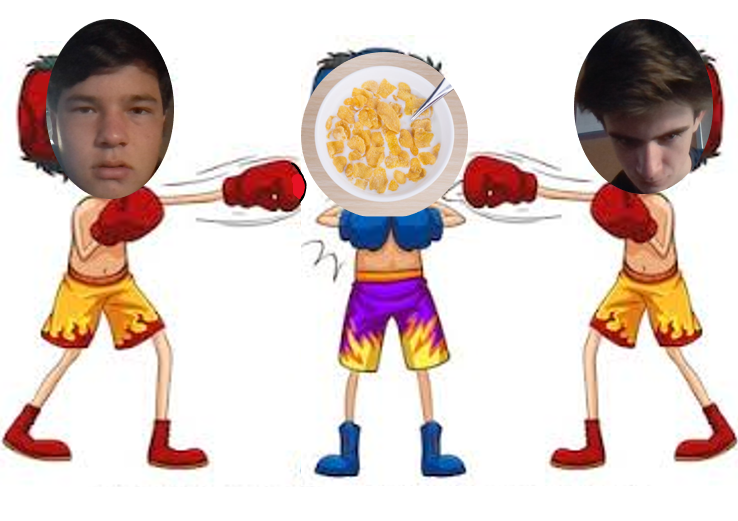

Colin Hatcher and Finn Pak are two young men from Birmingham, Alabama, in the south of the United States. They never had a particular hatred for breakfast cereals in the past, but oh boy did they develope one. These two boys set out on an adventure, nay, a spiritual quest. Five of the most recognizable cereal mascots were gathered up to be experimented on. The experiments being run were more or less of a fight club. The two boys took five mascots; Tony The Tiger(Frosted Flakes), Tricks Rabbit(Trix), Horatio Megellan Crunch(Cap'n Crunch), Bad Apple and Cinnamon(Apple Jacks), and Lucky The Leprechaun(Lucky Charms). The boys did not want to beat up these (sometimes) adorable mascots, but they were willing to make a sacrifice in the name of science. These are two of the bravest boys in the country and we salute them for their work. Their findings are published on these webpages.